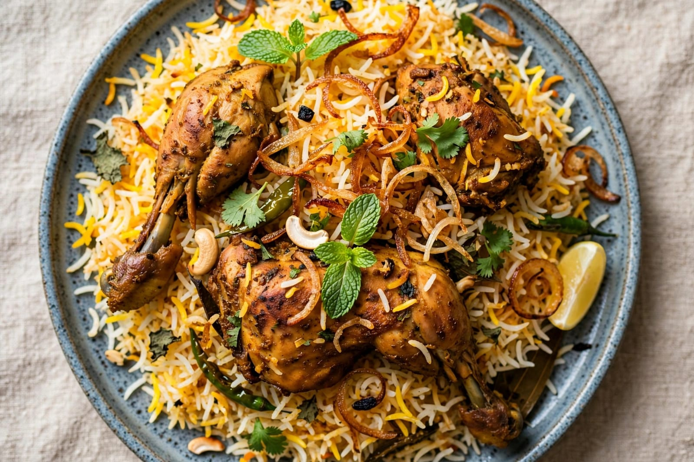
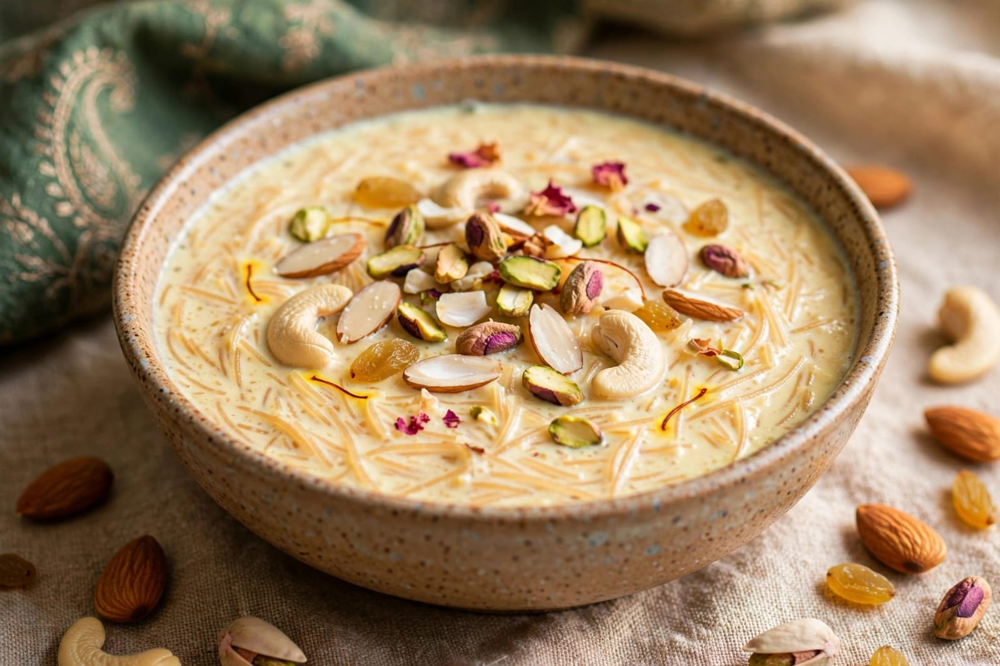
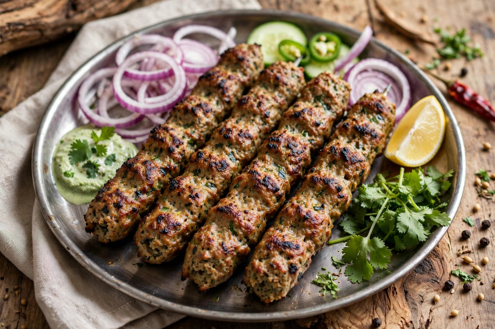

About Eid-ul-Adha
Eid-ul-Adha is an important Islamic festival celebrated by Muslims. It is also known as the Festival of Sacrifice. The festival commemorates Prophet Ibrahim's devotion and obedience to God. It is celebrated on the tenth day of Dhul Hijjah. Dhul Hijjah is an important month in the Islamic calendar. Eid-ul-Adha is connected with the annual Hajj pilgrimage. Muslims around the world celebrate the festival with prayer and devotion. On the morning of Eid, people wear clean or new clothes. They gather at mosques or open prayer grounds for Eid prayers. Special prayers are offered on this day. People greet each other and exchange good wishes. The festival teaches faith, obedience and generosity. It also encourages people to help those in need. Families spend time together during the celebration. Food is prepared specially for family and guests. People share food with relatives, friends and neighbours. Charity is an important part of the festival. Muslims remember the importance of caring for others. The festival creates a feeling of brotherhood and unity. Homes are cleaned and prepared for the celebration. Many people decorate their homes simply. Children enjoy wearing traditional clothes. Families visit relatives and friends. People exchange greetings and gifts. The festival is celebrated with happiness and devotion. Eid-ul-Adha has great religious and cultural importance. It reminds people about sacrifice and generosity. It encourages people to share their blessings with others.
Eid-ul-Adha begins with special preparations at home. Muslims wake up early on the morning of Eid. Many people take a bath and wear clean clothes. They prepare for the Eid prayer. People gather at mosques and prayer grounds. The Eid prayer is performed in congregation. An Imam gives a sermon after the prayer. The sermon often reminds people about faith and compassion. Families greet each other after the prayer. The traditional sacrifice is performed by eligible Muslims according to religious practices. The meat is traditionally divided and shared with family, friends and people in need. Sharing food reflects the spirit of generosity. Charity and helping the less fortunate are important values of the festival. People remember those who may need support. Families prepare special meals at home. Sweet dishes are also prepared for guests. Relatives and friends visit each other. Children receive gifts or money from elders in some families. People exchange greetings and spend time together. The festival strengthens family and community relationships. Muslims also remember the importance of patience and obedience. The story of Prophet Ibrahim is remembered during the festival. His devotion is an important part of the religious significance of Eid-ul-Adha. The festival teaches people to put faith and duty first. It also encourages generosity towards others. People try to forgive and maintain peaceful relationships. Neighbours may share food with one another. Community celebrations create a sense of unity. Eid-ul-Adha is celebrated in many countries around the world. Different regions have their own food and cultural traditions. Despite regional differences, the religious meaning remains important. The festival is a time of prayer, sharing and togetherness.
Eid-ul-Adha is enjoyed by people of different age groups. Children wear traditional clothes and participate in family celebrations. Young people visit relatives and friends. Elders guide families in religious traditions. Families gather together for meals. People share food with neighbours and those in need. Charity is an important part of the festival. The festival teaches kindness and generosity. It reminds people to be thankful for their blessings. Eid-ul-Adha also promotes community spirit. People greet one another with warm wishes. Families spend valuable time together. Special dishes are prepared in many homes. Sweet foods are shared with guests. The festival creates a joyful atmosphere. It strengthens relationships between family members. It encourages people to care for others. The message of sacrifice is remembered throughout the celebration. The festival also promotes compassion and responsibility. Muslims celebrate Eid-ul-Adha with prayer and devotion. It is a meaningful festival of faith, sacrifice and generosity. The celebration brings people together. It spreads happiness and encourages people to share with others.
Special Foods

Biryani
Biryani is a popular festive rice dish prepared in many homes during Eid.

Sheer Khurma
Sheer Khurma is a traditional sweet milk dish prepared for Eid celebrations.

Kebab
Kebabs are popular dishes often prepared for special occasions.